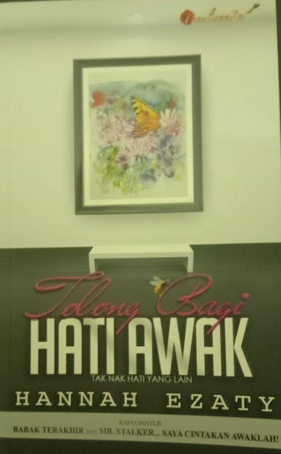

PRELOVED BOOKSTORE | 

Tolong Bagi Hati Awak
Preloved Price: RM 12.00
Category:Romance
Summary: Bagi Merah, lelaki semuanya sama. Suka mengambil kesempatan dan tidak bertimbang rasa. Disebabkan seorang lelaki, dia disumbat ke dalam lokap dan kerana seorang lelaki juga dia dikeluarkan dari sana. Nama saya Adrian Syah. Panggil saja Adrian. - ADRIAN Adrian hadir tanpa diduga pada masa, tempat dan keadaan yang tepat. Merah yang kehilangan tempat berteduh, kesempitan duit dan tiada pekerjaan tetap tiba-tiba dihulur bantuan. Kehidupannya berubah sekelip mata tetapi Merah tetap tak mahu percaya sehingga dia menuduh Adrian punya agenda. Tak ada manusia kat dunia ni yang jujur pun! Semuanya nak mengambil kesempatan. Buat baik tapi sebenarnya penuh dengan agenda! - MERAH Saya bukan orang jahat dan berniat nak buat bukan-bukan. Saya ikhlas bantu awak. - ADRIAN Dek satu insiden, perlahan-lahan Merah mulai meletakkan kepercayaannya kepada Adrian. Tapi hidupnya mulai tergugat dengan kehadiran Amanda, si kucing parsi yang gemar mencari pasal dengannya. Tak cukup Amanda, bosnya pula Andhika mulai menunjukkan minatnya terhadap Merah malah Adrian juga suka bergurau soal hati dengannya sehingga dia tersepit antara ketiga-tiga mereka.
| Title | Tolong Bagi Hati Awak |
|---|---|
| ISBN | 9789670992211 |
| Format: | Paperback |
| Author: | Hannah Ezaty |
| Category: | Romance |
| Publisher: | Penulisan2u |
*Reminder: Please copy&paste the title of the book to put into the order list and also please calculate the price of the book your own to pay it on checkout form.